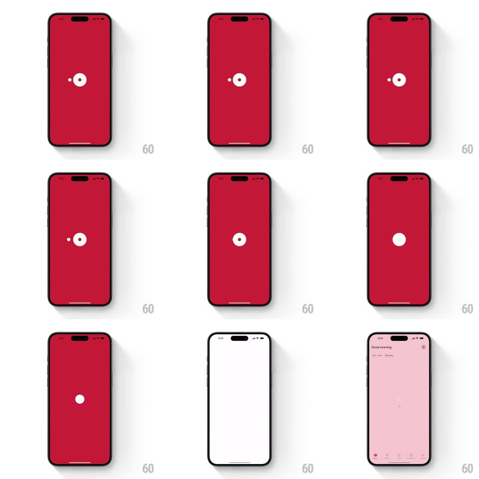

Media
Frame-by-frame

Rebuild this animation 1:1: OpenTable's splash - the white logo mark on brand red plays its dot-and-circle animation, then the circle scales up to wipe the screen into the pink "Good evening" home.

Rebuild this animation 1:1: OpenTable's splash - the white logo mark on brand red plays its dot-and-circle animation, then the circle scales up to wipe the screen into the pink "Good evening" home.
## Integration
Integration: stack-agnostic spec - springs given as stiffness/damping, timed motions as duration + curve; map every value to your framework and animation library of choice.
## Scene
Full-screen OpenTable red with a centered white mark: a small dot beside a ring (the "o" with its center dot). The reveal lands on the pale pink home screen ("Good evening", search field, reservation slots).
## Motion spec
Pattern: logo scale-up wipe, ~1.4s.
- Mark intro: the small dot and the ring's center dot snap together (150ms), then the ring closes around it (250ms, ease-out).
- Hold: the completed mark rests 300ms.
- Wipe: the ring's inner circle expands from center (scale 1 -> 30, 600ms, ease-in) acting as a mask - the pink home screen is revealed through the growing circle while the red field holds.
- Settle: the home content fades up 12px (300ms) once the circle covers the screen.
## Calibration
- The expansion accelerates into the wipe (ease-in), it does not grow linearly.
- The mask is circular throughout - no edge clips or rounded-rect morphs.
## Reduced motion
The red screen crossfades to home (400ms).
## Don't miss
- The white circle becomes the wipe - it is the same element, scaled, not a new layer.
- The home screen is already rendered beneath the mask; nothing pops in after.